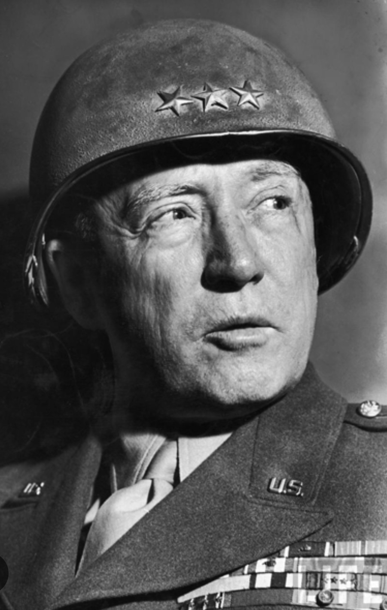

Nom : George Smith Patton Jr.
Dates : 11 novembre 1885 – 21 décembre 1945
Nationalité : Américaine
George S. Patton est l’un des généraux les plus célèbres de l’armée américaine durant la Seconde Guerre mondiale. Connu pour son caractère dur, son style autoritaire et son sens de la manœuvre rapide, il devient une figure emblématique du front européen.
Patton commande les forces américaines en Afrique du Nord, puis en Sicile en 1943. À partir de 1944, il prend la tête de la 3e Armée américaine en France, qu’il lance dans une avancée rapide à travers l’Europe, jouant un rôle majeur dans la libération de territoires occupés et dans la pression exercée sur les forces allemandes.
Patton est étudié comme un maître de la guerre de mouvement et de la manœuvre rapide. Son style de commandement, parfois controversé, mais extrêmement efficace sur le plan opérationnel, a contribué de manière significative à l’effondrement des forces allemandes sur le front occidental. Il reste une figure marquante de l’histoire militaire américaine.